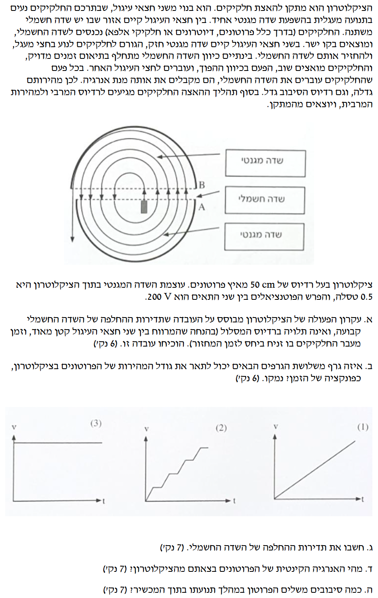

נרכז את הנתונים המופיעים בפתיח השאלה, ונוסיף קבועים פיזיקליים של הפרוטון (מתוך דף הנוסחאות). נוודא שכל הנתונים במערכת יחידות MKS:
הפרוטונים נעים בתנועה מעגלית בתוך חצאי העיגול (D) בהשפעת שדה מגנטי אחיד.
להוכיח שזמן המחזור (\( T \)) תלוי רק בקבועים ואינו תלוי ברדיוס המסלול או במהירות החלקיקים.
נרשום את משוואת הכוחות בציר הרדיאלי הפונה למרכז המעגל. הכוח היחיד שפועל במישור התנועה הוא הכוח המגנטי:
נצמצם את המהירות \( v \) (השונה מאפס) משני האגפים ונבודד את \( v \):
כעת, נציב את הביטוי למהירות בתוך נוסחת זמן המחזור \( T = \frac{2\pi r}{v} \):
ניתן לראות שהרדיוס \( r \) מצטמצם לחלוטין, ומתקבל הביטוי הסופי:
שלושה גרפים אפשריים המתארים את גודל המהירות של הפרוטונים כפונקציה של הזמן בציקלוטרון.
לבחור את הגרף הנכון מבין השלושה ולנמק מדוע הוא מתאר נכונה את תנועת הפרוטונים.
הפרוטון שוהה בתוך קופסאות ה"דיז" זמן ממושך (חצי זמן מחזור) שבו פועל עליו רק שדה מגנטי. בשלב זה גודל המהירות קבוע.
כאשר הפרוטון חוצה את המרווח הצר שבין ה"דיז", פועל עליו שדה חשמלי המבצע עבודה חיובית (\( W = q\Delta V \)) ומאיץ אותו בפרק זמן קצר מאוד, כך שגודל מהירותו גדל.
לכן, הגרף חייב להיות מורכב מקטעים אופקיים (מהירות קבועה בתוך ה"דיז") המופרדים על ידי קפיצות או עליות תלולות (האצה במרווח).
הקבועים שחישבנו בשלב 0, והנוסחה לזמן המחזור שהוכחנו בסעיף א'.
את תדירות ההחלפה (\( f \)) של השדה החשמלי (מתח חילופין).
כדי שהשדה החשמלי יאיץ את הפרוטון תמיד בכיוון הנכון בכל מעבר במרווח, תדירות השדה החשמלי חייבת להיות שווה לתדירות הסיבוב של הפרוטון בציקלוטרון (מצב של תהודה).
הקשר בין תדירות לזמן מחזור: \( f = \frac{1}{T} \).
נציב את \( T \) מסעיף א' ונקבל: \( f = \frac{qB}{2\pi m} \).
נציב את הנתונים:
נעגל את התוצאה ל-3 ספרות מהותיות:
רדיוס הציקלוטרון הוא הרדיוס המרבי שאליו מגיע הפרוטון לפני צאתו: \( R = 0.5 \text{ m} \).
את האנרגיה הקינטית (\( E_k \)) המרבית של הפרוטונים בצאתם מהמכשיר.
נחשב תחילה את המהירות המרבית בצאת הפרוטון מהציקלוטרון (עבור \( R=0.5 \)):
כעת נציב את המהירות בנוסחת האנרגיה הקינטית:
האנרגיה הקינטית הסופית של הפרוטון שחישבנו בסעיף הקודם (\( E_k = 4.79 \cdot 10^{-13} \text{ J} \)). הפרש הפוטנציאלים במרווח הוא \( \Delta V = 200 \text{ V} \).
את מספר הסיבובים השלמים (\( N \)) שהשלים הפרוטון בתוך הציקלוטרון.
בכל פעם שהפרוטון חוצה את המרווח בין ה"דיז", השדה החשמלי מבצע עבודה ומוסיף לו אנרגיה קינטית. העבודה המבוצעת בכל חצייה היא: \( \Delta E_{cross} = q\Delta V \).
במהלך סיבוב שלם אחד (מעגל מלא), הפרוטון חוצה את המרווח פעמיים. לכן, התוספת לאנרגיה בכל סיבוב שלם היא: \( \Delta E_{rev} = 2q\Delta V \).
מספר הסיבובים מתקבל מחלוקת האנרגיה הסופית הכוללת בתוספת האנרגיה לכל סיבוב: \( N = \frac{E_k}{2q\Delta V} \).
נציב את הנתונים בביטוי למספר הסיבובים (כדי להימנע משגיאות עיגול, נשתמש בערך המדויק יותר של \( E_k \)):
מכיוון שביקשו לדעת כמה סיבובים שלמים הפרוטון השלים, ואנו נדרשים לתת תשובה ב-3 ספרות מהותיות, נרשום: